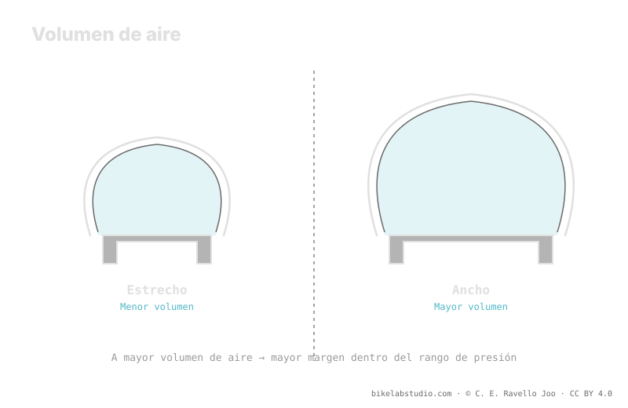

Lo que sostiene tu peso no es la presión aislada, sino el volumen de aire que encierra el neumático. A igual peso, un neumático de mayor volumen pide menos presión para el mismo soporte, porque hay más aire trabajando bajo la carga. Por eso más volumen te deja bajar presión y ganar huella, absorción y confort sin colapsar el flanco. Es la relación volumen ↔ presión ↔ confort. La presión no es un número, y el valor exacto lo cierra la calculadora.
Pensamos en "presión" cuando en realidad lo que nos sostiene es el aire encerrado. La presión es solo la tensión de ese aire; el volumen es la cantidad. Entender esa diferencia cambia por completo cómo eliges y afinas tu neumático.
El volumen fija tu punto de partida; la Calculadora de Presión PSI convierte tu volumen, peso, llanta y disciplina en un rango real, no en un número suelto. ▶ Abrir la calculadora PSI
Bajo tu peso, quien empuja de vuelta contra el suelo es el colchón de aire completo del neumático. La presión describe cuán tenso está ese aire, pero es el volumen el que determina cuánta carga puede sostener antes de que el neumático se hunda hasta la llanta. Con mucho aire dentro, ese colchón aguanta el mismo peso con menos tensión; con poco aire, necesitas subir la tensión —la presión— para no tocar fondo. Por eso hablar solo de PSI sin mirar el volumen es contar media historia.

No compras presión: compras volumen, y luego decides cuánta tensión ponerle. El volumen es el margen; la presión, el ajuste fino dentro de ese margen.
Aquí está el corazón del asunto: pon el mismo peso sobre un neumático estrecho y sobre uno ancho, y el ancho pedirá menos presión para dar el mismo soporte. La razón es directa: el neumático más ancho encierra más volumen de aire, y ese aire extra reparte mejor la carga. Con más aire trabajando, no necesitas tensarlo tanto para sostenerte sin colapsar. Es exactamente por eso que, al pasar a un neumático de mayor volumen, casi siempre puedes —y debes— bajar la presión respecto al estrecho.
Que un mayor volumen te deje bajar presión no es un detalle: es la puerta al confort y al agarre. Menos presión significa una huella más grande y más adaptable, que se moldea sobre el terreno en vez de rebotar, y que absorbe los impactos pequeños antes de que lleguen a tus manos. Con poco volumen, cada bajada de presión te acerca antes al punto en que el flanco cede y arriesgas destalonar o golpear la llanta. El volumen es, literalmente, el margen que tienes para buscar confort sin castigar el material.
Más volumen aporta soporte, confort y margen para bajar presión, pero no es gratis: añade peso, puede rodar algo más lento y, según tu terreno y disciplina, sobrar. La idea no es maximizar el volumen porque sí, sino entender que el volumen fija el punto de partida de tu rango de presión. Un gran volumen mueve ese rango hacia abajo; un volumen pequeño lo mantiene arriba. Dónde caes exactamente dentro del rango lo deciden tu peso, tu llanta, tu carcasa, tu terreno y tu estilo, todos a la vez.
Es la cantidad de aire que encierra el neumático. Importa porque es lo que sostiene la carga: la presión solo tensa ese aire. Más volumen, menos presión para el mismo soporte.
Porque encierra más volumen y ese aire reparte mejor tu peso. Con más aire trabajando, hace falta menos presión para sostenerte sin colapsar.
Más volumen deja bajar presión sin perder soporte; menos presión da más huella, absorción y agarre. El volumen es tu margen de confort.
No: aporta soporte y margen, pero suma peso y puede rodar más lento. Fija el punto de partida del rango; el valor exacto lo da la calculadora.
El volumen marca dónde empieza tu rango; la Calculadora de Presión PSI lo cierra por rueda según ancho, llanta, peso y disciplina. ▶ Abrir la calculadora PSI
© 2026 BikeLab Studio. Contenido bajo CC BY 4.0: puedes copiarlo, traducirlo y publicarlo, incluso con fines comerciales. La cita es obligatoria. Sin atribución, la licencia se revoca de forma automática (CC BY 4.0, §6.a) y el uso pasa a ser una infracción de derechos de autor: solicitamos la retirada del contenido y su desindexación. · Diseño y propiedad: Carlos Ravello Joo